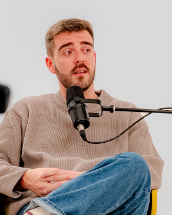

Over more than 15 years, our students have created dozens of films, photographs, web and multimedia applications, and exhibitions. Here we highlight just a few of the many interesting projects created in CAM throughout our history.
FEATURED PROJECTS
Audiovisual / Reel
Sound Workshop
Sound capture and editing in a studio environment.


Photography / Collective
Multimedia Exhibition
A selection of practical works from the semester.
OUR GRADUATES

Eliabe Campos
CEO Overall Studio“The CAM course didn't just prepare me to enter the labor market...”
READ TESTIMONIAL“The CAM course didn't just prepare me to enter the 'traditional' labor market, with fixed hours and the routine of waiting for the end of the month to receive a salary. On the contrary, it gave me tools and a way of thinking that helped me follow my own path. When I look back, I realize that CAM was not just training but the starting point for everything I have built until now.”

Francisco Miranda
CEO Yank CREATIVE MEDIA“In the CAM course, I discovered my passion for sound and image...”
READ TESTIMONIAL“In the CAM course, I discovered my passion for sound and image, acquiring the essential foundations to grow and establish myself in the audiovisual field, later creating my own photography and video production company focused on advertising work.”

Monique Moreira
UI Designer“CAM provided me with an important foundation in visual culture...”
READ TESTIMONIAL“Training in CAM gave me an important foundation in visual culture, communication, and critical thinking about images. Although my professional path has moved towards UI Design, these references continue to influence how I observe, analyze, and create digital solutions in my work.”

João Rodrigues
CEO Seagmedia“About 14 years ago, I was just a freelancer with a desire to grow...”
READ TESTIMONIAL“About 14 years ago, I was just a freelancer with a desire to grow, learn, and make things happen. I didn't imagine at all what I would build years later with SEAGMEDIA. But if today I lead an audiovisual production company that works with major brands and national and international projects, I know that this path was not built alone. Lusófona University of Porto was part of that journey. Not just for the technical knowledge, but also for how it helped consolidate a more complete vision of the creative industry and what it means to transform creativity into projects with real impact. Looking back and recognizing this is, above all, a sign of gratitude.”